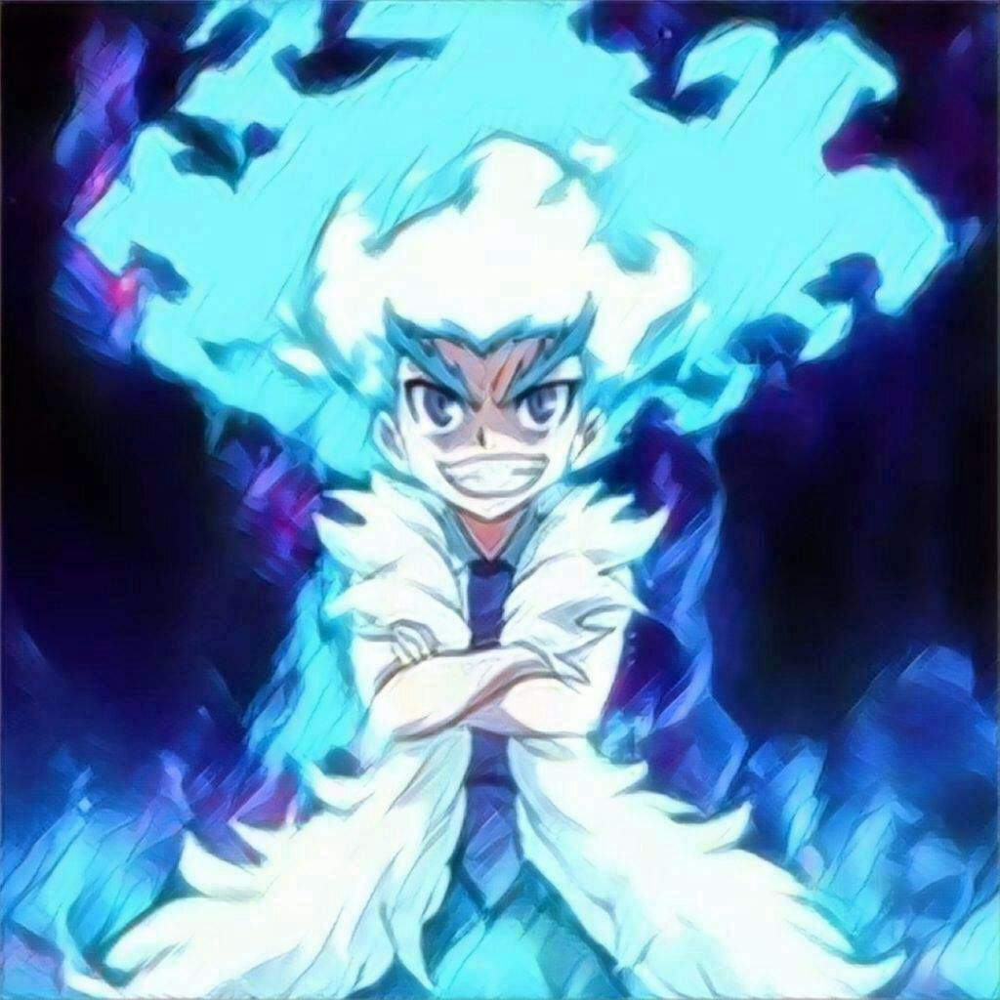

1.VALT AOI

Valt Aoi is the energetic, main protagonist of the Beyblade Burst anime and manga series, known for his passionate Beyblading, his iconic Beyblade Valtryek, and his dream to become the world's #1 Blader,
evolving from a naive kid to a legendary champion
who forms strong bonds with friends and rivals like Shu Kurenai. He's characterized by his sociable nature,
strong determination, and sometimes clumsy but courageous spirit, leading teams like Beigoma Academy BeyClub and BC Sol.
Key Characteristics:
Personality: Enthusiastic, friendly, determined, sometimes overconfident, sensitive, and very loyal to his friends.
Skills: Exceptional launching skills, strong connection with his Beyblade, and a natural ability to inspire others.
Beyblades: Starts with Victory Valtryek, upgrades to Strike Valtryek and Wonder Valtryek, and later uses Turbo Valtryek.
Goals: To become the World Champion and the best Blader in the world, achieving this title across different series.
Relationships: Best friends with Rantaro Kiyama and his main rival/best friend, Shu Kurenai, who later becomes "Red Eye".
2.Shu kurenai

Shu Kurenai is a central, beloved character and deuteragonist in the Beyblade Burst anime series, known as a prodigy blader, Valt Aoi's best friend, and a member of the elite Supreme Four, who later transforms into the masked antagonist "Red Eye" due to trauma and
manipulation, wielding powerful Beyblades like Spryzen, before overcoming his darkness to become a legendary
blader across multiple seasons.
Key Characteristics & Story Arc:
Prolific Blader: Starts as a top blader in his region, known for his skill and powerful Beyblade, Storm Spryzen.
Red Eye Transformation: After defeats and losing Spryzen, he joins the Snake Pit organization, becoming the dark, masked blader "Red Eye," a major antagonist in Beyblade Burst Evolution (God).
Redemption: He is eventually saved by Valt, overcomes his inner turmoil, and creates new, powerful Spryzen Beyblades (Legend Spryzen, Spryzen Requiem).
Legendary Status: He becomes a legendary blader, competing globally and featuring prominently in subsequent seasons like Turbo (Super Z) and Rise (GT).
Signature Beyblades: His main Beyblade line is Spryzen/Spriggan, evolving through Storm, Legend, Spryzen Requiem, and later Astral Spriggan.
3.Aiger akabane

Aiger Akabane (or Aiga Akaba in Japan) is the energetic, hot-headed main protagonist of Beyblade Burst Turbo, known for his intense desire to become the strongest blader, his iconic red Beyblade Z Achilles (later upgraded), and his unique journey from a farm boy
to World Champion, overcoming personal darkness and a corrupted resonance with his Beyblade. He's famous
for his rivalry with Valt Aoi and his signature moves, eventually learning to balance his immense power with friendship and a healthy approach to battling.
Key Aspects of Aiger Akabane:
Origin: Started as a wild child on a farm, inspired by Valt Aoi's power to create his own Beyblade, Z Achilles, with help from his family.
Personality: Initially arrogant, boastful, and focused solely on personal strength, he gradually learns humility and the importance of friendship after falling into a "dark resonance" with Achilles.
Beyblade: His Beyblade, Z Achilles, is a balanced type that evolves through several forms, including Turbo Achilles and Union Achilles, known for its destructive power and special moves like Turbo Whip.
Arc: His story in Turbo is a significant character arc, detailing his struggle with ego, fear, and the corrupting influence of dark power, leading to a more mature outlook by Beyblade Burst Rise.
Signature Trait: His name (Akaba) means "red blade," reflecting his red Beyblades, and his nickname "Aiga" symbolizes his family bonds.
4.FREE DALA HOYA

Free De La Hoya is a prominent, powerful, yet often lazy character from the Beyblade Burst anime and manga series, known as the world's #1 Blader, a former captain of BC Sol, and a member of the Raging Bulls, famous for his golden hair, unique hand-spinning technique
with his Beyblade Fafnir, and being inspired by boxer Oscar De La Hoya. He's characterized by his cool,
aloof demeanor and a secret habit of self-harm (biting his arm) to focus, which led to the arm brace he wears.
Key Aspects of Free De La Hoya:
Series: Beyblade Burst Evolution (and later seasons).
Role: Main character/Tritagonist, initially world's #1 Blader.
Beyblade: Storm Fafnir, later evolving to Geist Fafnir and Mirage Fafnir.
Personality: Talented but seemingly lazy, often bored due to his overwhelming strength, fond of animals (especially a deer).
Fighting Style: Prefers hand-spinning his Beyblade, a unique technique for absorbing power, though uses a launcher for strong opponents.
Origin of Arm Brace: Given by Christina to cover bite marks from his habit of biting his arm when stressed or angry in battles.
Inspiration: Modeled after real-life boxer Oscar "The Golden Boy" De La Hoya, also called "The Golden Boy".
LUI SHIROSAGI
Lui Shirosagi is a formidable, often arrogant, legendary Blader from the Beyblade Burst series, known as the "Frozen Ogre" and a member of the Supreme Four, famous for his raw power, undefeated streaks (initially), and his reverse-rotating Bey, Bloody Longinus,
later evolving to Guilty Luinor. He's a major rival to protagonists like Valt Aoi and Shu Kurenai,
initially presented as an antagonist due to his immense skill and disdain for weaker opponents, but his confidence and character evolve throughout the series, especially after losses and partnerships, impacting his gameplay and appearance.
Key Characteristics:
Skill & Reputation: A top-tier Blader, often considered one of the best, having won multiple national championships consecutively, setting the standard for skill.
Personality: Arrogant, competitive, and confident, disliking losses and showing little respect for those he deems unworthy, though this changes over time.
Beyblades: Primarily uses Bloody Longinus (or Longinus), a powerful, reverse-rotating Bey, later seen with Guilty Luinor.
Rivalries: Intense rivalries with Valt Aoi, Shu Kurenai, and Free De La Hoya.
Appearance: Distinctive blue hair and purple eyes; his hair's appearance often reflects his confidence level.
Special Moves: Executes powerful attacks like "Lost Spiral" and "Dragon Scream".
6.DANTE KORYUO

Dante Koryu (Kōryū Doramu in Japan) is the energetic and dragon-loving main protagonist of Beyblade Burst Rise, known for his iconic Beyblades like Ace Dragon and later upgraded versions, seeking the legendary Hyper-Flux, and later appearing in Beyblade Burst
Surge as a S-Tier blader with his new Lightning Beyblade, Tempest Dragon, embodying passion and a journey
to become a top Blader, despite initial underestimation.
Key Characteristics:
Personality: A cheerful, optimistic, and sometimes silly "ball of sunshine" who loves dragons and uses a ripcord launcher, unique for a main protagonist.
Debut: Introduced in Beyblade Burst Rise as a young blader aiming for Hyper-Flux.
Key Beyblades: Started with Ace Dragon, upgraded to Imperial Dragon Ignition', and later Master Dragon Ignition', also using Tempest Dragon in Surge.
Signature Move: Dragon Launch.
Role: The central figure in Rise, he later returns in Surge as a strong competitor.
7.HIKARU HIYUGA HIZASHI

Hikaru and Hyuga Hizashi are the energetic, sun-themed brother protagonists of Beyblade Burst Surge, known for their contrasting blading styles: strategic Hikaru (Helios) and aggressive Hyuga (Hyperion) who learn to combine their powers for "Twin Strikes,"
bringing a fresh, modern approach (like string launchers) to the Beyblade world while running their
family restaurant and learning from legends.
Hikaru Hizashi
Personality: Calm, strategic, patient, and the "voice of reason" for his brother, though sometimes self-absorbed; he aims to be a hero and is protective of Hyuga.
Beyblade: Started with Kolossal Helios Zone, evolving to Helios Blazebringer, a balance-type Beyblade.
Key Trait: The first main Beyblade protagonist with a left-handed launch style.
Hyuga Hizashi
Personality: Energetic, passionate, and charges headfirst into battles, often clashing with Hikaru's caution; he loves working hard and playing hard.
Beyblade: Began with Super Hyperion Xceed, evolving to Hyperion Flamebringer, an attack-type Beyblade.
Key Trait: A fiery, attack-focused blader, often the more impulsive of the two.
8.PHI

Phi is a major antagonist in Beyblade Burst Turbo, known for his dark, sadistic personality and his powerful Beyblade, Revive Phoenix, which can shed its armor to become a weapon, making him a formidable "Lord of Destruction" who enjoys breaking other Beys,
especially his twin brother Hyde's. He's obsessed with power and destruction, driven by a deep-seated
jealousy of Hyde, and eventually evolves his Bey into Dread Phoenix, becoming even more ruthless before ultimately facing defeat and reconciling with his brother.
Key Characteristics:
Personality: Starts seemingly calm but reveals a sadistic, power-hungry, and immature side, viewing others as toys for his amusement.
Motivation: Seeks ultimate strength, fueled by resentment towards his twin Hyde from a childhood rivalry over the Bey Hades.
Signature Beyblade: Revive Phoenix, a Defense type with the unique ability to lose its armor (Phoenix Armor) to become a powerful weapon, setting a new standard for destruction.
Evolution: After defeating Hades, he transforms Revive Phoenix into Dread Phoenix, becoming even more dominant and corrupting others, including Aiger.
Abilities: Corrupts opponents, possesses immense skill, and holds the record for most Beys broken in the series.
Appearance: Has heterochromia (different colored eyes), a trait shared with his brother Hyde, and wears a distinctive outfit.
9.BELL DAIZORA

Bel Daizora (or Bell Daikokuten in Japan) is the main protagonist of Beyblade Burst: QuadDrive/QuadStrike, known as the "Dark Prince" or "Demon King" for his arrogant yet powerful battling style, using Beys like Destruction Belfyre and evolving it,
and is characterized by his unique launcher and distinct laugh, often causing chaos but showing talent.
Key Aspects
Series: Main protagonist of Beyblade Burst QuadDrive/QuadStrike (Season 6).
Nickname: "Dark Prince" (international) or "Demon King" (Japan).
Beyblade: Starts with Destruction Belfyre Nexus Venture-2, evolving it into Devastate Belfyre Almight-2 and later versions as the series progresses.
Personality: Cocky, mischievous, and often annoyingly confident, but also a talented blader who innovates with launchers and Bey parts, like discovering smaller gear ratios for launchers.
Battles: Known for early victories against legendary bladers like Lui Shirosagi and Valt Aoi, and challenging Aiger Akabane.
Unique Traits: Homeschooled, has specific launch phrases (like "3 2 1 let it R"), and is the first Burst protagonist to have initials matching his season's Japanese name (Dynamite Battle - DB).
10.GWYN REYNOLDS

Gwyn Reynolds is a brilliant, enigmatic math and physics prodigy from Beyblade Burst Rise (also known as Beyblade Burst GT), known for his super-intelligent approach to blading with his Beyblade, Royal Genesis, later evolving to Big Bang Genesis,
and his signature, overpowered move, Superior-Flux. He's a late but powerful antagonist who initially battles to prove his perfect blading, but evolves to seek challenges, using hyper-physics to analyze and dominate battles, making him one of the series' most formidable opponents.
Key Characteristics:
Genius-Level Intellect: Gwyn is a math whiz who can instantly calculate battle trajectories and anomalies, treating blading like complex physics problems.
Personality: He's initially aloof and driven by a desire to find a worthy challenge, believing he's already mastered everything.
Beyblade: His main Bey is Royal Genesis, a powerful defense-type Beyblade.
Signature Move: His ultimate attack is Superior-Flux, a move so strong it can overwhelm opponents.
Role in the Series: Introduced as an undefeated powerhouse, he serves as a major antagonist, pushing the main characters to their limits.